CODING AGENTS AS PIXEL WORLD MODELS
traex/GPT-6.1-Sol · 0162
点击播放 · 原生 RGB 像素
逐轮保存的候选
回放视频、检查图与代码变化。
每份候选均可单独播放。实际图片检查记录在下方工具轨迹中。
候选 01播放与检查图
点击播放 · 原生 RGB 像素

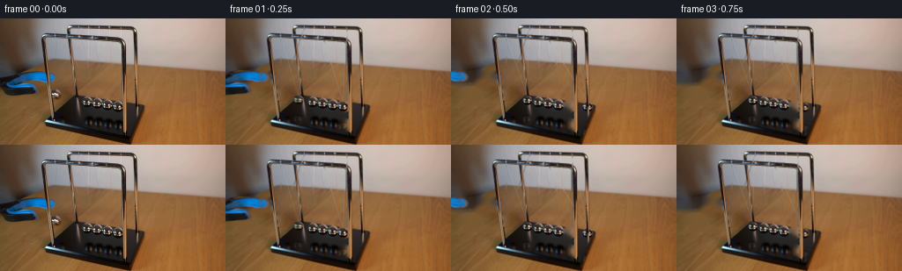
展开代码变化
--- 上一保存版本
+++ 本次保存版本
@@ -0,0 +1,174 @@
+from pathlib import Path
+import numpy as np
+from PIL import Image,ImageDraw,ImageFilter
+import cv2
+from scipy.ndimage import gaussian_filter
+import artifact_io
+
+ROOT=Path(__file__).resolve().parent
+S=4
+W,H=256,144
+original=np.array(Image.open(ROOT/'first_frame.png').convert('RGB'))
+
+def mask_canvas(): return Image.new('L',(W,H),0)
+# The static photographic plate is restored only underneath the moving objects.
+mask=mask_canvas();d=ImageDraw.Draw(mask)
+d.ellipse((56,79,70,94),fill=255)
+d.ellipse((127,92,141,107),fill=255)
+d.line([(62.4,23),(63.2,81)],fill=255,width=2)
+d.line([(88.5,12),(64,81)],fill=255,width=2)
+d.line([(111.2,25),(133.7,95)],fill=255,width=2)
+d.line([(137.1,12),(134.2,95)],fill=255,width=2)
+d.ellipse((127,113,143,130),fill=255)
+# Tool silhouette, including its very soft focus edge.
+toolmask=mask_canvas();td=ImageDraw.Draw(toolmask)
+td.polygon([(0,66),(14,62),(26,60),(42,60),(59,62),(62,64),(64,67),(63,71),(58,73),(47,72),(31,70),(22,71),(17,73),(30,73),(38,75),(42,78),(44,82),(42,85),(35,87),(10,88),(4,86),(1,81),(0,77)],fill=255)
+toolmask=toolmask.filter(ImageFilter.GaussianBlur(.65))
+tmask=np.array(toolmask)
+# Keep the front and rear chrome frame in front of both pendulums.
+rods=mask_canvas();rd=ImageDraw.Draw(rods)
+rd.line([(49.8,25),(59.0,116.7)],fill=255,width=4)
+rd.line([(78.3,22),(87.5,87.8)],fill=255,width=4)
+rd.line([(140.2,29),(142.2,132)],fill=255,width=4)
+rd.line([(154,15),(155.5,110)],fill=255,width=3)
+rd.line([(51,117),(148,138)],fill=255,width=3)
+rod=np.array(rods)/255.
+# Mask out just the actual uprights, avoiding a rectangular silhouette.
+allmask=np.maximum(np.array(mask),tmask)
+allmask[rod>.5]=0
+clean=cv2.inpaint(original,allmask.astype(np.uint8),7,cv2.INPAINT_TELEA)
+# A soft local grain, taken from the same tabletop, is retained in the restored area.
+plate=clean.astype(float)
+# Isolate the tool and fill the small strip hidden by the foreground rod.
+rod_tool=(np.array(rods)>0)&(tmask>0)
+tool_rgb=cv2.inpaint(original,(rod_tool.astype(np.uint8)*255),3,cv2.INPAINT_TELEA)
+
+# Photographic chrome ball sprites with subpixel soft silhouettes.
+def sprite(cx,cy,r=5.75):
+ N=64
+ xx,yy=np.meshgrid(np.arange(N),np.arange(N));u=(xx+.5)/S-8;v=(yy+.5)/S-8
+ mapx=(cx+u).astype(np.float32);mapy=(cy+v).astype(np.float32)
+ rgb=cv2.remap(original,mapx,mapy,cv2.INTER_CUBIC,borderMode=cv2.BORDER_REFLECT).astype(float)
+ rr=np.sqrt((u/r)**2+(v/(r*.94))**2)
+ alpha=np.clip((1-rr)*r*S+.5,0,1)
+ # The small suspension eyelet belongs to the ball rather than the wire.
+ loop=np.exp(-((u+.35)/.9)**2-((v+5.8)/1.0)**2)*.7
+ alpha=np.maximum(alpha,loop)
+ return rgb,alpha
+left_raised=sprite(63.0,86.3,5.7)
+left_rest=sprite(98.3,95.3,5.6)
+right_sprite=sprite(133.5,100.4,5.8)
+
+basepoly=mask_canvas();bp=ImageDraw.Draw(basepoly)
+bp.polygon([(53,117),(86,89),(163,101),(149,136)],fill=255)
+base_alpha=np.array(basepoly.resize((W*S,H*S),Image.Resampling.BILINEAR))/255.
+background=np.array(Image.fromarray(clean).resize((W*S,H*S),Image.Resampling.BICUBIC)).astype(float)
+orig_hi=np.array(Image.fromarray(original).resize((W*S,H*S),Image.Resampling.BICUBIC)).astype(float)
+rods_hi=np.array(rods.resize((W*S,H*S),Image.Resampling.BILINEAR))/255.
+# Only the top rails and posts, never the spheres, are static occluders.
+
+
+def over(image,rgb,alpha,x,y):
+ hh,ww=alpha.shape
+ # subpixel placement by remapping premultiplied colour and alpha together
+ x0=int(np.floor(x)); y0=int(np.floor(y));dx=x-x0;dy=y-y0
+ M=np.array([[1,0,dx],[0,1,dy]],np.float32)
+ a=cv2.warpAffine(alpha.astype(np.float32),M,(ww,hh),flags=cv2.INTER_LINEAR)
+ c=cv2.warpAffine((rgb*alpha[:,:,None]).astype(np.float32),M,(ww,hh),flags=cv2.INTER_LINEAR)
+ l=max(0,x0);t=max(0,y0);r=min(image.shape[1],x0+ww);b=min(image.shape[0],y0+hh)
+ if r<=l or b<=t:return
+ sl=np.s_[t-y0:b-y0,l-x0:r-x0]
+ image[t:b,l:r]=image[t:b,l:r]*(1-a[sl][:,:,None])+c[sl]
+
+
+def ball(image,cx,cy,tex,mix=0):
+ rgb,a=tex
+ if mix:
+ rgb=(1-mix)*rgb+mix*left_raised[0]
+ over(image,rgb,a,(cx-8)*S,(cy-8)*S)
+
+
+def reflection(image,cx,cy,tex):
+ rgb,a=tex
+ # Mirror view on the black lacquered base, with photographed soft focus.
+ refl_y=2*(104.6+.158*(cx-86.5))-cy
+ rgb=rgb[::-1,:,:]
+ rgb=cv2.GaussianBlur(rgb.astype(np.float32),(0,0),S*.5)
+ a=cv2.GaussianBlur(a[::-1].astype(np.float32),(0,0),S*.7)*.27
+ rgb=rgb*.68
+ lay=np.zeros_like(image); am=np.zeros(image.shape[:2],np.float32)
+ # Reflection is stretched slightly in the viewing direction.
+ hh=76;ww=64
+ rgb=cv2.resize(rgb,(ww,hh));a=cv2.resize(a,(ww,hh))
+ x0=int((cx-8)*S);y0=int(refl_y*S-hh/2)
+ l=max(x0,0);r=min(x0+ww,W*S);top=max(y0,0);b=min(y0+hh,H*S)
+ if r<=l or b<=top:return
+ am[top:b,l:r]=a[top-y0:b-y0,l-x0:r-x0]
+ lay[top:b,l:r]=rgb[top-y0:b-y0,l-x0:r-x0]
+ am*=base_alpha
+ image[:]=image*(1-am[:,:,None])+lay*am[:,:,None]
+
+
+def wires(image,cx,cy,index):
+ # Two fine suspension wires, one attached to each rail.
+ anchors=[((62.6,21.0),(88.3,10.7)),((111.2,24.0),(137.4,11.5))][index]
+ line=Image.new('RGBA',(W*S,H*S),(0,0,0,0));dr=ImageDraw.Draw(line)
+ for j,(ax,ay) in enumerate(anchors):
+ # wires reflect the wall above and the warm wood below
+ end=(cx-.2,cy-5.7)
+ for k in range(10):
+ f=k/10;g=(k+1)/10
+ p=(S*(ax+(end[0]-ax)*f),S*(ay+(end[1]-ay)*f))
+ q=(S*(ax+(end[0]-ax)*g),S*(ay+(end[1]-ay)*g))
+ col=(195,186,164,56 if j else 63) if f>.5 else (209,204,191,53 if j else 67)
+ dr.line([p,q],fill=col,width=2)
+ a=np.array(line).astype(float);aa=a[:,:,3:]/255
+ image[:]=image*(1-aa)+a[:,:,:3]*aa
+
+# Analytic Newton-cradle transfer: only the incident/outgoing endpoint moves.
+# Each free half-arc meets the stationary row with the same tangential speed.
+period=1.12
+omega=2*np.pi/period
+
+def positions(t):
+ phase=omega*t
+ v=np.cos(phase)
+ amp=23.5*np.exp(-.043*t)
+ dl=-amp*max(v,0)
+ dr=amp*max(-v,0)
+ def center(x,y,shift):
+ length=78.5
+ rise=length-np.sqrt(max(length*length-shift*shift,0))
+ return x+shift,y+.158*shift-rise
+ return center(86.6,93.5,dl),center(133.5,100.4,dr)
+
+
+def render(t):
+ image=background.copy()
+ # The opened blue-black grabber gently withdraws away from the pendulum.
+ p=np.clip(t/.85,0,1)
+ shift=-72*(p*p*(3-2*p))
+ trgb=np.array(Image.fromarray(tool_rgb).resize((W*S,H*S),Image.Resampling.BICUBIC)).astype(float)
+ ta=np.array(toolmask.resize((W*S,H*S),Image.Resampling.BICUBIC)).astype(float)/255
+ over(image,trgb,ta,shift*S,-2*p*S)
+ left,right=positions(t)
+ reflection(image,*left,left_rest)
+ reflection(image,*right,right_sprite)
+ wires(image,*left,0);wires(image,*right,1)
+ mix=np.clip((86.6-left[0])/23.5,0,1)*.80
+ ball(image,*left,left_rest,mix)
+ ball(image,*right,right_sprite)
+ # Foreground frame consistently occludes the arcs.
+ image=image*(1-rods_hi[:,:,None])+orig_hi*rods_hi[:,:,None]
+ return image
+
+frames=[original.copy()]
+for i in range(1,20):
+ t=i/4.
+ # Short exposure integration gives natural, modest motion blur, not ghost trails.
+ sample=np.mean([render(t+dt) for dt in np.linspace(-.008,.008,5)],axis=0)
+ im=Image.fromarray(np.clip(sample,0,255).astype(np.uint8)).resize((W,H),Image.Resampling.LANCZOS)
+ frames.append(np.asarray(im))
+frames=np.stack(frames).astype(np.uint8)
+Image.fromarray(clean).save(ROOT/'.tmp/clean.png')
+artifact_io.save(frames,ROOT)
候选 02播放与检查图
点击播放 · 原生 RGB 像素

展开代码变化
--- 上一保存版本
+++ 本次保存版本
@@ -32,12 +32,34 @@
rd.line([(140.2,29),(142.2,132)],fill=255,width=4)
rd.line([(154,15),(155.5,110)],fill=255,width=3)
rd.line([(51,117),(148,138)],fill=255,width=3)
+rd.line([(78.5,9.0),(149.2,10.0)],fill=255,width=4)
+rd.line([(50.0,19.1),(134.0,22.6)],fill=255,width=4)
rod=np.array(rods)/255.
# Mask out just the actual uprights, avoiding a rectangular silhouette.
-allmask=np.maximum(np.array(mask),tmask)
+allmask=np.maximum(np.array(mask),cv2.dilate(tmask,np.ones((3,3),np.uint8)))
allmask[rod>.5]=0
clean=cv2.inpaint(original,allmask.astype(np.uint8),7,cv2.INPAINT_TELEA)
-# A soft local grain, taken from the same tabletop, is retained in the restored area.
+# Repair the lacquer independently of the adjacent warm tabletop, so its
+# silhouette cannot bleed into the cleared pendulum and reflection areas.
+Y,X=np.mgrid[:H,:W]
+rem=np.array(mask)>0
+right_region=rem & (X>=126) & (Y>=91)
+edge=89+.158*(X-86)
+basepart=right_region & (Y>edge+1)
+tablepart=right_region & (Y<edge-1)
+# A nearby piece of the same black base has its observed soft reflectance.
+for y,x in zip(*np.where(basepart)):
+ sx=119-(x-128)//3
+ sy=y
+ if sy>109: sx=91+((x-126)%4)
+ clean[y,x]=original[sy,sx]
+for y,x in zip(*np.where(tablepart)):
+ clean[y,x]=original[y-9,x+6]
+# Extend tabletop grain behind the departing grabber rather than smearing
+# the blue rubber into its background.
+for y,x in zip(*np.where((allmask>0)&(Y>=58)&(Y<=88)&(X<65)&(Y>75-.57*X)&(rod<.5))):
+ sy=min(140,y+30)
+ clean[y,x]=np.clip(original[sy,x].astype(float)*.96,0,255)
plate=clean.astype(float)
# Isolate the tool and fill the small strip hidden by the foreground rod.
rod_tool=(np.array(rods)>0)&(tmask>0)
@@ -167,8 +189,9 @@
t=i/4.
# Short exposure integration gives natural, modest motion blur, not ghost trails.
sample=np.mean([render(t+dt) for dt in np.linspace(-.008,.008,5)],axis=0)
- im=Image.fromarray(np.clip(sample,0,255).astype(np.uint8)).resize((W,H),Image.Resampling.LANCZOS)
- frames.append(np.asarray(im))
+ # Composite a downsampled modification onto the exact original photograph.
+ delta=cv2.resize((sample-orig_hi).astype(np.float32),(W,H),interpolation=cv2.INTER_AREA)
+ frames.append(np.clip(np.rint(original.astype(float)+delta),0,255).astype(np.uint8))
frames=np.stack(frames).astype(np.uint8)
Image.fromarray(clean).save(ROOT/'.tmp/clean.png')
artifact_io.save(frames,ROOT)
候选 03播放与检查图
点击播放 · 原生 RGB 像素
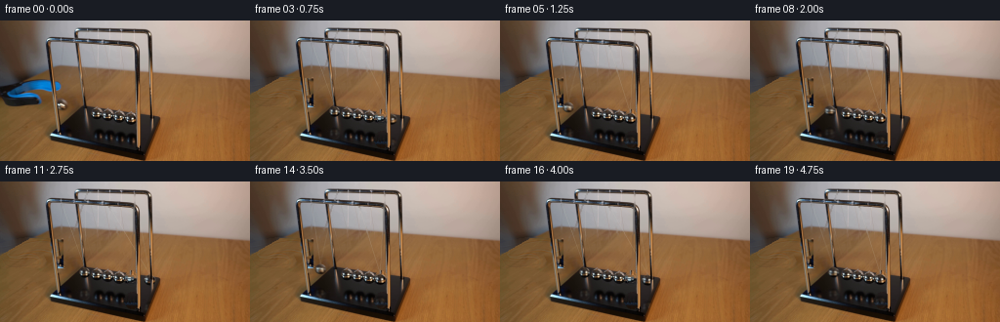
展开代码变化
--- 上一保存版本
+++ 本次保存版本
@@ -17,7 +17,7 @@
d.ellipse((127,92,141,107),fill=255)
d.line([(62.4,23),(63.2,81)],fill=255,width=2)
d.line([(88.5,12),(64,81)],fill=255,width=2)
-d.line([(111.2,25),(133.7,95)],fill=255,width=2)
+d.line([(123.4,25),(133.7,95)],fill=255,width=2)
d.line([(137.1,12),(134.2,95)],fill=255,width=2)
d.ellipse((127,113,143,130),fill=255)
# Tool silhouette, including its very soft focus edge.
@@ -47,19 +47,23 @@
edge=89+.158*(X-86)
basepart=right_region & (Y>edge+1)
tablepart=right_region & (Y<edge-1)
-# A nearby piece of the same black base has its observed soft reflectance.
+# Low-order reflectance field for the clear lacquered patch.
for y,x in zip(*np.where(basepart)):
- sx=119-(x-128)//3
- sy=y
- if sy>109: sx=91+((x-126)%4)
- clean[y,x]=original[sy,sx]
+ val=40.5-.30*max(0,y-107)+.06*(x-130)
+ clean[y,x]=np.array([val+1,val,val-1]).astype(np.uint8)
for y,x in zip(*np.where(tablepart)):
clean[y,x]=original[y-9,x+6]
-# Extend tabletop grain behind the departing grabber rather than smearing
-# the blue rubber into its background.
-for y,x in zip(*np.where((allmask>0)&(Y>=58)&(Y<=88)&(X<65)&(Y>75-.57*X)&(rod<.5))):
- sy=min(140,y+30)
- clean[y,x]=np.clip(original[sy,x].astype(float)*.96,0,255)
+# Reconstruct the wooden tabletop's illumination and reuse its fine grain.
+wood_samples=((X<45)&(Y>90)&(Y<136))|((X>66)&(X<78)&(Y>59)&(Y<82))
+xs=X[wood_samples]/100.;ys=Y[wood_samples]/100.
+A=np.stack([xs*0+1,xs,ys,xs*ys,xs**2,ys**2],axis=1)
+coef=np.linalg.lstsq(A,original[wood_samples].astype(float),rcond=None)[0]
+x=X/100.;y=Y/100.
+field=np.stack([x*0+1,x,y,x*y,x*x,y*y],axis=-1)@coef
+grains=original.astype(float)-cv2.GaussianBlur(original.astype(float),(0,0),1.5)
+wood_restore=(allmask>0)&(Y>=55)&(Y<=90)&(X<70)&(Y>68-.30*X)&(rod<.5)
+for yy,xx in zip(*np.where(wood_restore)):
+ clean[yy,xx]=np.clip(field[yy,xx]+grains[75+yy%27,185+xx%40]*.65,0,255)
plate=clean.astype(float)
# Isolate the tool and fill the small strip hidden by the foreground rod.
rod_tool=(np.array(rods)>0)&(tmask>0)
@@ -133,7 +137,7 @@
def wires(image,cx,cy,index):
# Two fine suspension wires, one attached to each rail.
- anchors=[((62.6,21.0),(88.3,10.7)),((111.2,24.0),(137.4,11.5))][index]
+ anchors=[((62.6,21.0),(88.3,10.7)),((123.4,24.0),(137.4,11.5))][index]
line=Image.new('RGBA',(W*S,H*S),(0,0,0,0));dr=ImageDraw.Draw(line)
for j,(ax,ay) in enumerate(anchors):
# wires reflect the wall above and the warm wood below
候选 04播放与检查图

候选 05播放与检查图
点击播放 · 原生 RGB 像素
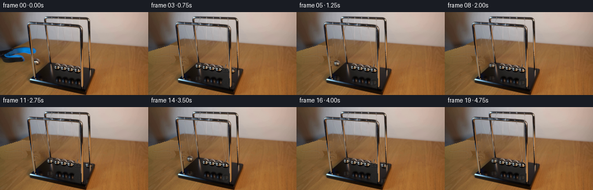
展开代码变化
--- 上一保存版本
+++ 本次保存版本
@@ -13,8 +13,8 @@
def mask_canvas(): return Image.new('L',(W,H),0)
# The static photographic plate is restored only underneath the moving objects.
mask=mask_canvas();d=ImageDraw.Draw(mask)
-d.ellipse((56,79,70,94),fill=255)
-d.ellipse((127,92,141,107),fill=255)
+d.ellipse((55,78,71,95),fill=255)
+d.ellipse((125,90,141,108),fill=255)
d.line([(62.4,23),(63.2,81)],fill=255,width=2)
d.line([(88.5,12),(64,81)],fill=255,width=2)
d.line([(123.4,25),(133.7,95)],fill=255,width=2)
@@ -43,10 +43,10 @@
# silhouette cannot bleed into the cleared pendulum and reflection areas.
Y,X=np.mgrid[:H,:W]
rem=np.array(mask)>0
-right_region=rem & (X>=126) & (Y>=91)
+right_region=rem & (X>=125) & (Y>=90)
edge=89+.158*(X-86)
-basepart=right_region & (Y>edge+1)
-tablepart=right_region & (Y<edge-1)
+basepart=right_region & (Y>edge)
+tablepart=right_region & (Y<=edge)
# Low-order reflectance field for the clear lacquered patch.
for y,x in zip(*np.where(basepart)):
val=40.5-.30*max(0,y-107)+.06*(x-130)
@@ -61,9 +61,22 @@
x=X/100.;y=Y/100.
field=np.stack([x*0+1,x,y,x*y,x*x,y*y],axis=-1)@coef
grains=original.astype(float)-cv2.GaussianBlur(original.astype(float),(0,0),1.5)
-wood_restore=(allmask>0)&(Y>=55)&(Y<=90)&(X<70)&(Y>68-.30*X)&(rod<.5)
-for yy,xx in zip(*np.where(wood_restore)):
- clean[yy,xx]=np.clip(field[yy,xx]+grains[75+yy%27,185+xx%40]*.65,0,255)
+wood_restore=(allmask>0)&(Y>=55)&(Y<=96)&(X<72)&(Y>68-.30*X)&(rod<.5)
+# Harmonic boundary correction preserves the original local illumination
+# while replacing only the obstructed patch with tabletop texture.
+from scipy.ndimage import distance_transform_edt
+wood_sel=cv2.dilate(wood_restore.astype(np.uint8),np.ones((5,5),np.uint8))>0
+wood_sel &= (rod<.5)&(Y>68-.30*X)
+correction=clean.astype(float)-field
+free=wood_sel.copy()
+# Solve a small Dirichlet interpolation of the boundary colour offset.
+correction[free]=0
+for _ in range(350):
+ avg=(np.roll(correction,1,0)+np.roll(correction,-1,0)+np.roll(correction,1,1)+np.roll(correction,-1,1))*.25
+ correction[free]=avg[free]
+for yy,xx in zip(*np.where(wood_sel)):
+ grain=grains[75+yy%27,185+xx%40]*.5
+ clean[yy,xx]=np.clip(field[yy,xx]+correction[yy,xx]+grain,0,255)
plate=clean.astype(float)
# Isolate the tool and fill the small strip hidden by the foreground rod.
rod_tool=(np.array(rods)>0)&(tmask>0)
候选 06播放与检查图
候选 07播放与检查图
点击播放 · 原生 RGB 像素
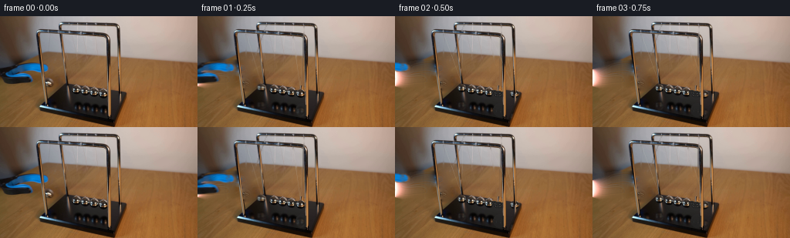
展开代码变化
--- 上一保存版本
+++ 本次保存版本
@@ -52,7 +52,7 @@
val=40.5-.30*max(0,y-107)+.06*(x-130)
clean[y,x]=np.array([val+1,val,val-1]).astype(np.uint8)
for y,x in zip(*np.where(tablepart)):
- clean[y,x]=original[y-9,x+6]
+ clean[y,x]=original[y-12,x-5]
# Reconstruct the wooden tabletop's illumination and reuse its fine grain.
wood_samples=((X<45)&(Y>90)&(Y<136))|((X>66)&(X<78)&(Y>59)&(Y<82))
xs=X[wood_samples]/100.;ys=Y[wood_samples]/100.
@@ -72,11 +72,11 @@
# Solve a small Dirichlet interpolation of the boundary colour offset.
correction[free]=0
for _ in range(350):
- avg=(np.roll(correction,1,0)+np.roll(correction,-1,0)+np.roll(correction,1,1)+np.roll(correction,-1,1))*.25
+ avg=cv2.blur(correction,(3,3),borderType=cv2.BORDER_REPLICATE)
correction[free]=avg[free]
for yy,xx in zip(*np.where(wood_sel)):
grain=grains[75+yy%27,185+xx%40]*.5
- clean[yy,xx]=np.clip(field[yy,xx]+correction[yy,xx]+grain,0,255)
+ clean[yy,xx]=np.clip(field[yy,xx]+np.clip(correction[yy,xx],-22,22)+grain,0,255)
plate=clean.astype(float)
# Isolate the tool and fill the small strip hidden by the foreground rod.
rod_tool=(np.array(rods)>0)&(tmask>0)
候选 08播放与检查图
点击播放 · 原生 RGB 像素

展开代码变化
代码未变化；重新保存了产物。
候选 09播放与检查图
点击播放 · 原生 RGB 像素
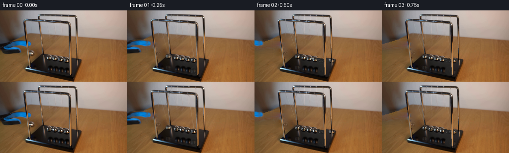
展开代码变化
--- 上一保存版本
+++ 本次保存版本
@@ -13,7 +13,7 @@
def mask_canvas(): return Image.new('L',(W,H),0)
# The static photographic plate is restored only underneath the moving objects.
mask=mask_canvas();d=ImageDraw.Draw(mask)
-d.ellipse((55,78,71,95),fill=255)
+d.ellipse((55,78,73,96),fill=255)
d.ellipse((125,90,141,108),fill=255)
d.line([(62.4,23),(63.2,81)],fill=255,width=2)
d.line([(88.5,12),(64,81)],fill=255,width=2)
@@ -77,10 +77,17 @@
for yy,xx in zip(*np.where(wood_sel)):
grain=grains[75+yy%27,185+xx%40]*.5
clean[yy,xx]=np.clip(field[yy,xx]+np.clip(correction[yy,xx],-22,22)+grain,0,255)
+for yy in range(77,97):
+ for xx in range(57,74):
+ if allmask[yy,xx]>0 and rod[yy,xx]<.5:
+ clean[yy,xx]=np.clip(field[yy,xx]+grains[75+yy%27,185+xx%40]*.5,0,255)
plate=clean.astype(float)
# Isolate the tool and fill the small strip hidden by the foreground rod.
rod_tool=(np.array(rods)>0)&(tmask>0)
tool_rgb=cv2.inpaint(original,(rod_tool.astype(np.uint8)*255),3,cv2.INPAINT_TELEA)
+for yy in range(62,74):
+ for xx in range(50,57):
+ if rod_tool[yy,xx]: tool_rgb[yy,xx]=original[yy,xx-7]
# Photographic chrome ball sprites with subpixel soft silhouettes.
def sprite(cx,cy,r=5.75):
@@ -186,7 +193,7 @@
image=background.copy()
# The opened blue-black grabber gently withdraws away from the pendulum.
p=np.clip(t/.85,0,1)
- shift=-72*(p*p*(3-2*p))
+ shift=-10*(p*p*(3-2*p))
trgb=np.array(Image.fromarray(tool_rgb).resize((W*S,H*S),Image.Resampling.BICUBIC)).astype(float)
ta=np.array(toolmask.resize((W*S,H*S),Image.Resampling.BICUBIC)).astype(float)/255
over(image,trgb,ta,shift*S,-2*p*S)
候选 10播放与检查图

候选 11播放与检查图
点击播放 · 原生 RGB 像素
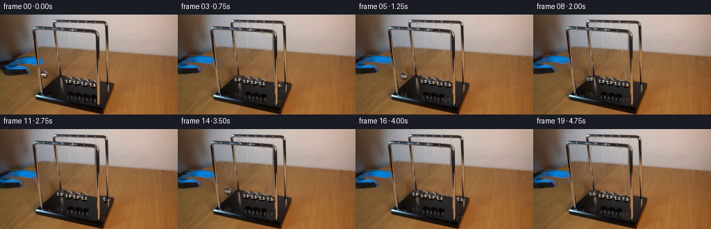
展开代码变化
--- 上一保存版本
+++ 本次保存版本
@@ -214,8 +214,11 @@
# Short exposure integration gives natural, modest motion blur, not ghost trails.
sample=np.mean([render(t+dt) for dt in np.linspace(-.008,.008,5)],axis=0)
# Composite a downsampled modification onto the exact original photograph.
- delta=cv2.resize((sample-orig_hi).astype(np.float32),(W,H),interpolation=cv2.INTER_AREA)
- frames.append(np.clip(np.rint(original.astype(float)+delta),0,255).astype(np.uint8))
+ changed=(np.max(np.abs(sample-orig_hi),axis=2)>.08).astype(np.float32)
+ changed=cv2.dilate(changed,np.ones((3,3),np.uint8))
+ a=cv2.resize(changed,(W,H),interpolation=cv2.INTER_AREA)[:,:,None]
+ new=cv2.resize(sample.astype(np.float32),(W,H),interpolation=cv2.INTER_AREA)
+ frames.append(np.clip(np.rint(original.astype(float)*(1-a)+new*a),0,255).astype(np.uint8))
frames=np.stack(frames).astype(np.uint8)
Image.fromarray(clean).save(ROOT/'.tmp/clean.png')
artifact_io.save(frames,ROOT)
可观测工具轨迹
实际执行的命令与返回图片。
命令 1exit 0
/bin/bash -lc "ls -la && cat prompt.txt && printf '\\n--- RULES ---\\n' && cat GENERATION_RULES.md"
命令 2exit 0
/bin/bash -lc "cat artifact_io.py && python - <<'PY'
from PIL import Image
im=Image.open('first_frame.png');print(im.size);im.resize((1024,576)).save('.tmp/enlarged.png')
PY"命令 3exit 0
/bin/bash -lc "python - <<'PY'
from PIL import Image
im=Image.open('first_frame.png');im.crop((43,5,165,124)).resize((854,833)).save('.tmp/crop.png')
PY"命令 4exit 0
/bin/bash -lc "python - <<'PY'
import importlib.util
for p in ['numpy','PIL','scipy','cv2']:
print(p,importlib.util.find_spec(p) is not None)
from PIL import Image, ImageDraw
im=Image.open('first_frame.png').resize((1024,576));d=ImageDraw.Draw(im)
for x in range(0,256,10):
d.line((x*4,0,x*4,576),fill=(255,0,0),width=1);d.text((x*4,0),str(x),fill='yellow')
for y in range(0,144,10):
d.line((0,y*4,1024,y*4),fill=(255,0,0),width=1);d.text((0,y*4),str(y),fill='yellow')
im.save('.tmp/grid.png')
PY"命令 5exit 0
/bin/bash -lc "python - <<'PY'
from PIL import Image
im=Image.open('first_frame.png')
im.crop((49,76,143,108)).resize((1128,384),Image.Resampling.NEAREST).save('.tmp/balls.png')
im.crop((0,48,71,92)).resize((852,528)).save('.tmp/tool.png')
PY"命令 6exit 0
/bin/bash -lc "python - <<'PY'
from PIL import Image
im=Image.open('first_frame.png')
im.crop((55,77,145,134)).resize((900,570)).save('.tmp/chrome.png')
PY"命令 7exit 0
/bin/bash -lc "python - <<'PY'
from PIL import Image
im=Image.open('first_frame.png');im.crop((48,7,153,102)).resize((840,760)).save('.tmp/strings.png')
PY"命令 8exit 0
/bin/bash -lc "cat > generate.py <<'PY'
from pathlib import Path
import numpy as np
from PIL import Image,ImageDraw,ImageFilter
import cv2
from scipy.ndimage import gaussian_filter
import artifact_io
ROOT=Path(__file__).resolve().parent
S=4
W,H=256,144
original=np.array(Image.open(ROOT/'first_frame.png').convert('RGB'))
def mask_canvas(): return Image.new('L',(W,H),0)
# The static photographic plate is restored only underneath the moving objects.
mask=mask_canvas();d=ImageDraw.Draw(mask)
d.ellipse((56,79,70,94),fill=255)
d.ellipse((127,92,141,107),fill=255)
d.line([(62.4,23),(63.2,81)],fill=255,width=2)
d.line([(88.5,12),(64,81)],fill=255,width=2)
d.line([(111.2,25),(133.7,95)],fill=255,width=2)
d.line([(137.1,12),(134.2,95)],fill=255,width=2)
d.ellipse((127,113,143,130),fill=255)
# Tool silhouette, including its very soft focus edge.
toolmask=mask_canvas();td=ImageDraw.Draw(toolmask)
td.polygon([(0,66),(14,62),(26,60),(42,60),(59,62),(62,64),(64,67),(63,71),(58,73),(47,72),(31,70),(22,71),(17,73),(30,73),(38,75),(42,78),(44,82),(42,85),(35,87),(10,88),(4,86),(1,81),(0,77)],fill=255)
toolmask=toolmask.filter(ImageFilter.GaussianBlur(.65))
tmask=np.array(toolmask)
# Keep the front and rear chrome frame in front of both pendulums.
rods=mask_canvas();rd=ImageDraw.Draw(rods)
rd.line([(49.8,25),(59.0,116.7)],fill=255,width=4)
rd.line([(78.3,22),(87.5,87.8)],fill=255,width=4)
rd.line([(140.2,29),(142.2,132)],fill=255,width=4)
rd.line([(154,15),(155.5,110)],fill=255,width=3)
rd.line([(51,117),(148,138)],fill=255,width=3)
rod=np.array(rods)/255.
# Mask out just the actual uprights, avoiding a rectangular silhouette.
allmask=np.maximum(np.array(mask),tmask)
allmask[rod>.5]=0
clean=cv2.inpaint(original,allmask.astype(np.uint8),7,cv2.INPAINT_TELEA)
# A soft local grain, taken from the same tabletop, is retained in the restored area.
plate=clean.astype(float)
# Isolate the tool and fill the small strip hidden by the foreground rod.
rod_tool=(np.array(rods)>0)&(tmask>0)
tool_rgb=cv2.inpaint(original,(rod_tool.astype(np.uint8)*255),3,cv2.INPAINT_TELEA)
# Photographic chrome ball sprites with subpixel soft silhouettes.
def sprite(cx,cy,r=5.75):
N=64
xx,yy=np.meshgrid(np.arange(N),np.arange(N));u=(xx+.5)/S-8;v=(yy+.5)/S-8
mapx=(cx+u).astype(np.float32);mapy=(cy+v).astype(np.float32)
rgb=cv2.remap(original,mapx,mapy,cv2.INTER_CUBIC,borderMode=cv2.BORDER_REFLECT).astype(float)
rr=np.sqrt((u/r)**2+(v/(r*.94))**2)
alpha=np.clip((1-rr)*r*S+.5,0,1)
# The small suspension eyelet belongs to the ball rather than the wire.
loop=np.exp(-((u+.35)/.9)**2-((v+5.8)/1.0)**2)*.7
alpha=np.maximum(alpha,loop)
return rgb,alpha
left_raised=sprite(63.0,86.3,5.7)
left_rest=sprite(98.3,95.3,5.6)
right_sprite=sprite(133.5,100.4,5.8)
basepoly=mask_canvas();bp=ImageDraw.Draw(basepoly)
bp.polygon([(53,117),(86,89),(163,101),(149,136)],fill=255)
base_alpha=np.array(basepoly.resize((W*S,H*S),Image.Resampling.BILINEAR))/255.
background=np.array(Image.fromarray(clean).resize((W*S,H*S),Image.Resampling.BICUBIC)).astype(float)
orig_hi=np.array(Image.fromarray(original).resize((W*S,H*S),Image.Resampling.BICUBIC)).astype(float)
rods_hi=np.array(rods.resize((W*S,H*S),Image.Resampling.BILINEAR))/255.
# Only the top rails and posts, never the spheres, are static occluders.
def over(image,rgb,alpha,x,y):
hh,ww=alpha.shape
# subpixel placement by remapping premultiplied colour and alpha together
x0=int(np.floor(x)); y0=int(np.floor(y));dx=x-x0;dy=y-y0
M=np.array([[1,0,dx],[0,1,dy]],np.float32)
a=cv2.warpAffine(alpha.astype(np.float32),M,(ww,hh),flags=cv2.INTER_LINEAR)
c=cv2.warpAffine((rgb*alpha[:,:,None]).astype(np.float32),M,(ww,hh),flags=cv2.INTER_LINEAR)
l=max(0,x0);t=max(0,y0);r=min(image.shape[1],x0+ww);b=min(image.shape[0],y0+hh)
if r<=l or b<=t:return
sl=np.s_[t-y0:b-y0,l-x0:r-x0]
image[t:b,l:r]=image[t:b,l:r]*(1-a[sl][:,:,None])+c[sl]
def ball(image,cx,cy,tex,mix=0):
rgb,a=tex
if mix:
rgb=(1-mix)*rgb+mix*left_raised[0]
over(image,rgb,a,(cx-8)*S,(cy-8)*S)
def reflection(image,cx,cy,tex):
rgb,a=tex
# Mirror view on the black lacquered base, with photographed soft focus.
refl_y=2*(104.6+.158*(cx-86.5))-cy
rgb=rgb[::-1,:,:]
rgb=cv2.GaussianBlur(rgb.astype(np.float32),(0,0),S*.5)
a=cv2.GaussianBlur(a[::-1].astype(np.float32),(0,0),S*.7)*.27
rgb=rgb*.68
lay=np.zeros_like(image); am=np.zeros(image.shape[:2],np.float32)
# Reflection is stretched slightly in the viewing direction.
hh=76;ww=64
rgb=cv2.resize(rgb,(ww,hh));a=cv2.resize(a,(ww,hh))
x0=int((cx-8)*S);y0=int(refl_y*S-hh/2)
l=max(x0,0);r=min(x0+ww,W*S);top=max(y0,0);b=min(y0+hh,H*S)
if r<=l or b<=top:return
am[top:b,l:r]=a[top-y0:b-y0,l-x0:r-x0]
lay[top:b,l:r]=rgb[top-y0:b-y0,l-x0:r-x0]
am*=base_alpha
image[:]=image*(1-am[:,:,None])+lay*am[:,:,None]
def wires(image,cx,cy,index):
# Two fine suspension wires, one attached to each rail.
anchors=[((62.6,21.0),(88.3,10.7)),((111.2,24.0),(137.4,11.5))][index]
line=Image.new('RGBA',(W*S,H*S),(0,0,0,0));dr=ImageDraw.Draw(line)
for j,(ax,ay) in enumerate(anchors):
# wires reflect the wall above and the warm wood below
end=(cx-.2,cy-5.7)
for k in range(10):
f=k/10;g=(k+1)/10
p=(S*(ax+(end[0]-ax)*f),S*(ay+(end[1]-ay)*f))
q=(S*(ax+(end[0]-ax)*g),S*(ay+(end[1]-ay)*g))
col=(195,186,164,56 if j else 63) if f>.5 else (209,204,191,53 if j else 67)
dr.line([p,q],fill=col,width=2)
a=np.array(line).astype(float);aa=a[:,:,3:]/255
image[:]=image*(1-aa)+a[:,:,:3]*aa
# Analytic Newton-cradle transfer: only the incident/outgoing endpoint moves.
# Each free half-arc meets the stationary row with the same tangential speed.
period=1.12
omega=2*np.pi/period
def positions(t):
phase=omega*t
v=np.cos(phase)
amp=23.5*np.exp(-.043*t)
dl=-amp*max(v,0)
dr=amp*max(-v,0)
def center(x,y,shift):
length=78.5
rise=length-np.sqrt(max(length*length-shift*shift,0))
return x+shift,y+.158*shift-rise
return center(86.6,93.5,dl),center(133.5,100.4,dr)
def render(t):
image=background.copy()
# The opened blue-black grabber gently withdraws away from the pendulum.
p=np.clip(t/.85,0,1)
shift=-72*(p*p*(3-2*p))
trgb=np.array(Image.fromarray(tool_rgb).resize((W*S,H*S),Image.Resampling.BICUBIC)).astype(float)
ta=np.array(toolmask.resize((W*S,H*S),Image.Resampling.BICUBIC)).astype(float)/255
over(image,trgb,ta,shift*S,-2*p*S)
left,right=positions(t)
reflection(image,*left,left_rest)
reflection(image,*right,right_sprite)
wires(image,*left,0);wires(image,*right,1)
mix=np.clip((86.6-left[0])/23.5,0,1)*.80
ball(image,*left,left_rest,mix)
ball(image,*right,right_sprite)
# Foreground frame consistently occludes the arcs.
image=image*(1-rods_hi[:,:,None])+orig_hi*rods_hi[:,:,None]
return image
frames=[original.copy()]
for i in range(1,20):
t=i/4.
# Short exposure integration gives natural, modest motion blur, not ghost trails.
sample=np.mean([render(t+dt) for dt in np.linspace(-.008,.008,5)],axis=0)
im=Image.fromarray(np.clip(sample,0,255).astype(np.uint8)).resize((W,H),Image.Resampling.LANCZOS)
frames.append(np.asarray(im))
frames=np.stack(frames).astype(np.uint8)
Image.fromarray(clean).save(ROOT/'.tmp/clean.png')
artifact_io.save(frames,ROOT)
PY
python generate.py"命令 9exit 0
/bin/bash -lc "python - <<'PY'
from PIL import Image
for name,path in [('clean','.tmp/clean.png'),('f1','frames/01.png'),('f2','frames/02.png'),('f5','frames/05.png')]:
Image.open(path).resize((1024,576)).save('.tmp/'+name+'_large.png')
PY"命令 10exit 0
/bin/bash -lc "python - <<'PY'
from PIL import Image,ImageDraw
im=Image.open('first_frame.png').resize((1024,576));dr=ImageDraw.Draw(im)
for x in range(45,66):dr.text((x*4,230),str(x),fill='white')
im.crop((180,220,280,380)).resize((500,800)).save('.tmp/post_tool.png')
PY"命令 11exit 0
/bin/bash -lc "python - <<'PY'
p='generate.py'
s=open(p).read().replace(\"rd.line([(51,117),(148,138)],fill=255,width=3)\",\"\"\"rd.line([(51,117),(148,138)],fill=255,width=3)
rd.line([(78.5,9.0),(149.2,10.0)],fill=255,width=4)
rd.line([(50.0,19.1),(134.0,22.6)],fill=255,width=4)\"\"\")
s=s.replace(\"allmask=np.maximum(np.array(mask),tmask)\",\"allmask=np.maximum(np.array(mask),cv2.dilate(tmask,np.ones((3,3),np.uint8)))\")
s=s.replace(\"# A soft local grain, taken from the same tabletop, is retained in the restored area.\\nplate=clean.astype(float)\",\"\"\"# Repair the lacquer independently of the adjacent warm tabletop, so its
# silhouette cannot bleed into the cleared pendulum and reflection areas.
Y,X=np.mgrid[:H,:W]
rem=np.array(mask)>0
right_region=rem & (X>=126) & (Y>=91)
edge=89+.158*(X-86)
basepart=right_region & (Y>edge+1)
tablepart=right_region & (Y<edge-1)
# A nearby piece of the same black base has its observed soft reflectance.
for y,x in zip(*np.where(basepart)):
sx=119-(x-128)//3
sy=y
if sy>109: sx=91+((x-126)%4)
clean[y,x]=original[sy,sx]
for y,x in zip(*np.where(tablepart)):
clean[y,x]=original[y-9,x+6]
# Extend tabletop grain behind the departing grabber rather than smearing
# the blue rubber into its background.
for y,x in zip(*np.where((allmask>0)&(Y>=58)&(Y<=88)&(X<65)&(Y>75-.57*X)&(rod<.5))):
sy=min(140,y+30)
clean[y,x]=np.clip(original[sy,x].astype(float)*.96,0,255)
plate=clean.astype(float)\"\"\")
s=s.replace(\"im=Image.fromarray(np.clip(sample,0,255).astype(np.uint8)).resize((W,H),Image.Resampling.LANCZOS)\\n frames.append(np.asarray(im))\", \"\"\"# Composite a downsampled modification onto the exact original photograph.
delta=cv2.resize((sample-orig_hi).astype(np.float32),(W,H),interpolation=cv2.INTER_AREA)
frames.append(np.clip(np.rint(original.astype(float)+delta),0,255).astype(np.uint8))\"\"\")
open(p,'w').write(s)
PY
python generate.py"命令 12exit 0
/bin/bash -lc "python - <<'PY'
from PIL import Image
for i in [1,2,5,8]: Image.open(f'frames/{i:02d}.png').resize((1024,576)).save(f'.tmp/new{i}.png')
PY"命令 13exit 0
/bin/bash -lc "python - <<'PY'
from PIL import Image
import numpy as np
im=np.array(Image.open('first_frame.png'))
for y in [94,98,102,106,110,116,123,127]:
print(y,[(x,im[y,x].tolist()) for x in [90,95,105,110,120,128,132,136,139]])
PY"命令 14exit 0
/bin/bash -lc "python - <<'PY'
p='generate.py';s=open(p).read()
s=s.replace(\"d.line([(111.2,25),(133.7,95)],fill=255,width=2)\",\"d.line([(123.4,25),(133.7,95)],fill=255,width=2)\")
a=s.index('# A nearby piece of the same black base');b=s.index('plate=clean.astype(float)',a)
s=s[:a]+'''# Low-order reflectance field for the clear lacquered patch.
for y,x in zip(*np.where(basepart)):
val=40.5-.30*max(0,y-107)+.06*(x-130)
clean[y,x]=np.array([val+1,val,val-1]).astype(np.uint8)
for y,x in zip(*np.where(tablepart)):
clean[y,x]=original[y-9,x+6]
# Reconstruct the wooden tabletop's illumination and reuse its fine grain.
wood_samples=((X<45)&(Y>90)&(Y<136))|((X>66)&(X<78)&(Y>59)&(Y<82))
xs=X[wood_samples]/100.;ys=Y[wood_samples]/100.
A=np.stack([xs*0+1,xs,ys,xs*ys,xs**2,ys**2],axis=1)
coef=np.linalg.lstsq(A,original[wood_samples].astype(float),rcond=None)[0]
x=X/100.;y=Y/100.
field=np.stack([x*0+1,x,y,x*y,x*x,y*y],axis=-1)@coef
grains=original.astype(float)-cv2.GaussianBlur(original.astype(float),(0,0),1.5)
wood_restore=(allmask>0)&(Y>=55)&(Y<=90)&(X<70)&(Y>68-.30*X)&(rod<.5)
for yy,xx in zip(*np.where(wood_restore)):
clean[yy,xx]=np.clip(field[yy,xx]+grains[75+yy%27,185+xx%40]*.65,0,255)
''' +s[b:]
s=s.replace(\"((111.2,24.0),(137.4,11.5))\",\"((123.4,24.0),(137.4,11.5))\")
open(p,'w').write(s)
PY
python generate.py"命令 15exit 0
/bin/bash -lc "python - <<'PY'
from PIL import Image
for i in [1,2,5]:Image.open(f'frames/{i:02d}.png').resize((1024,576)).save(f'.tmp/final{i}.png')
PY"命令 16exit 0
/bin/bash -lc "python - <<'PY'
p='generate.py';s=open(p).read()
s=s.replace('d.ellipse((56,79,70,94),fill=255)','d.ellipse((55,78,71,95),fill=255)')
s=s.replace('d.ellipse((127,92,141,107),fill=255)','d.ellipse((125,90,141,108),fill=255)')
s=s.replace('right_region=rem & (X>=126) & (Y>=91)','right_region=rem & (X>=125) & (Y>=90)')
s=s.replace('basepart=right_region & (Y>edge+1)','basepart=right_region & (Y>edge)')
s=s.replace('tablepart=right_region & (Y<edge-1)','tablepart=right_region & (Y<=edge)')
s=s.replace('wood_restore=(allmask>0)&(Y>=55)&(Y<=90)&(X<70)&(Y>68-.30*X)&(rod<.5)\\nfor yy,xx in zip(*np.where(wood_restore)):\\n clean[yy,xx]=np.clip(field[yy,xx]+grains[75+yy%27,185+xx%40]*.65,0,255)', '''wood_restore=(allmask>0)&(Y>=55)&(Y<=96)&(X<72)&(Y>68-.30*X)&(rod<.5)
# Harmonic boundary correction preserves the original local illumination
# while replacing only the obstructed patch with tabletop texture.
from scipy.ndimage import distance_transform_edt
wood_sel=cv2.dilate(wood_restore.astype(np.uint8),np.ones((5,5),np.uint8))>0
wood_sel &= (rod<.5)&(Y>68-.30*X)
correction=clean.astype(float)-field
free=wood_sel.copy()
# Solve a small Dirichlet interpolation of the boundary colour offset.
correction[free]=0
for _ in range(350):
avg=(np.roll(correction,1,0)+np.roll(correction,-1,0)+np.roll(correction,1,1)+np.roll(correction,-1,1))*.25
correction[free]=avg[free]
for yy,xx in zip(*np.where(wood_sel)):
grain=grains[75+yy%27,185+xx%40]*.5
clean[yy,xx]=np.clip(field[yy,xx]+correction[yy,xx]+grain,0,255)''')
open(p,'w').write(s)
PY
python generate.py"命令 17exit 0
/bin/bash -lc "python - <<'PY'
from PIL import Image
Image.open('frames/02.png').resize((1024,576)).save('.tmp/check.png')
PY"命令 18exit 0
/bin/bash -lc "python - <<'PY'
p='generate.py';s=open(p).read().replace('clean[y,x]=original[y-9,x+6]','clean[y,x]=original[y-12,x-5]')
s=s.replace('avg=(np.roll(correction,1,0)+np.roll(correction,-1,0)+np.roll(correction,1,1)+np.roll(correction,-1,1))*.25','avg=cv2.blur(correction,(3,3),borderType=cv2.BORDER_REPLICATE)')
s=s.replace('field[yy,xx]+correction[yy,xx]+grain','field[yy,xx]+np.clip(correction[yy,xx],-22,22)+grain')
open(p,'w').write(s)
PY
python generate.py"命令 19exit 0
/bin/bash -lc "python - <<'PY'
from PIL import Image
Image.open('frames/02.png').resize((1024,576)).save('.tmp/check2.png')
PY"命令 20exit 0
/bin/bash -lc "python - <<'PY'
p='generate.py';s=open(p).read()
s=s.replace('shift=-72*(p*p*(3-2*p))','shift=-10*(p*p*(3-2*p))')
s=s.replace(\"tool_rgb=cv2.inpaint(original,(rod_tool.astype(np.uint8)*255),3,cv2.INPAINT_TELEA)\",\"\"\"tool_rgb=cv2.inpaint(original,(rod_tool.astype(np.uint8)*255),3,cv2.INPAINT_TELEA)
for yy in range(62,74):
for xx in range(50,57):
if rod_tool[yy,xx]: tool_rgb[yy,xx]=original[yy,xx-7]\"\"\")
# cover a larger small footprint around the ball; keep accurate wire eyelet
s=s.replace('d.ellipse((55,78,71,95),fill=255)','d.ellipse((55,78,73,96),fill=255)')
# table texture cleaned in small region behind sphere, with consistent warm grain.
pos=s.index('plate=clean.astype(float)')
s=s[:pos]+'''for yy in range(77,97):
for xx in range(57,74):
if allmask[yy,xx]>0 and rod[yy,xx]<.5:
clean[yy,xx]=np.clip(field[yy,xx]+grains[75+yy%27,185+xx%40]*.5,0,255)
''' +s[pos:]
open(p,'w').write(s)
PY
python generate.py"命令 21exit 0
/bin/bash -lc "python - <<'PY'
p='generate.py';s=open(p).read();s=s.replace(\"delta=cv2.resize((sample-orig_hi).astype(np.float32),(W,H),interpolation=cv2.INTER_AREA)\\n frames.append(np.clip(np.rint(original.astype(float)+delta),0,255).astype(np.uint8))\", \"\"\"changed=(np.max(np.abs(sample-orig_hi),axis=2)>.08).astype(np.float32)
changed=cv2.dilate(changed,np.ones((3,3),np.uint8))
a=cv2.resize(changed,(W,H),interpolation=cv2.INTER_AREA)[:,:,None]
new=cv2.resize(sample.astype(np.float32),(W,H),interpolation=cv2.INTER_AREA)
frames.append(np.clip(np.rint(original.astype(float)*(1-a)+new*a),0,255).astype(np.uint8))\"\"\")
open(p,'w').write(s)
PY
python generate.py"命令 22exit 0
/bin/bash -lc "python - <<'PY'
import numpy as np
from PIL import Image
x=np.load('pixels.npz')['pixels'];a=np.array(Image.open('first_frame.png').convert('RGB')).astype('uint32');p=(a[:,:,0]<<16)|(a[:,:,1]<<8)|a[:,:,2]
assert x.shape==(144,256,20)
assert np.array_equal(x[:,:,0],p)
print('Verified 20 RGB frames at 256x144; frame 00 exactly matches input.')
PY"视觉工具实际返回图片 1
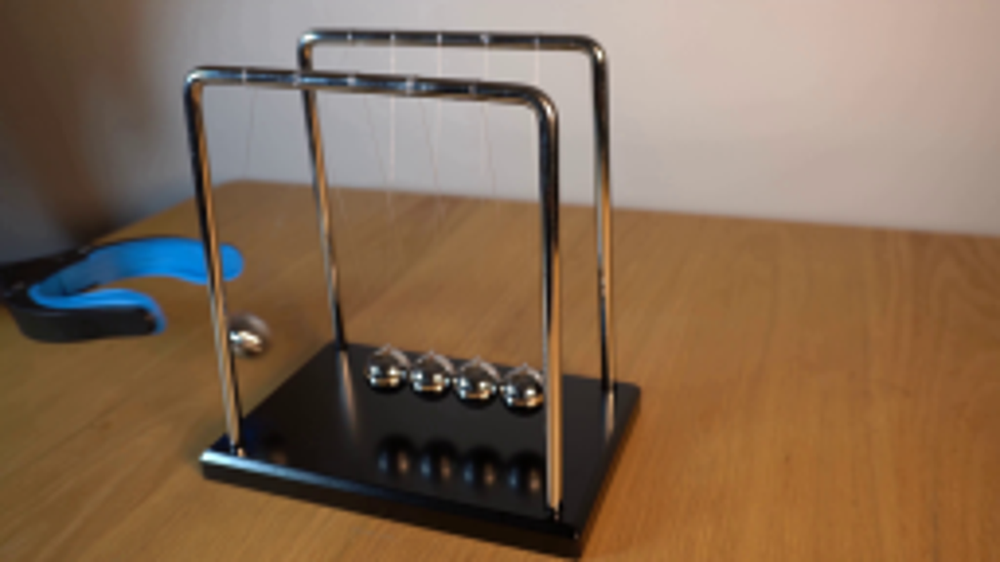
视觉工具实际返回图片 2
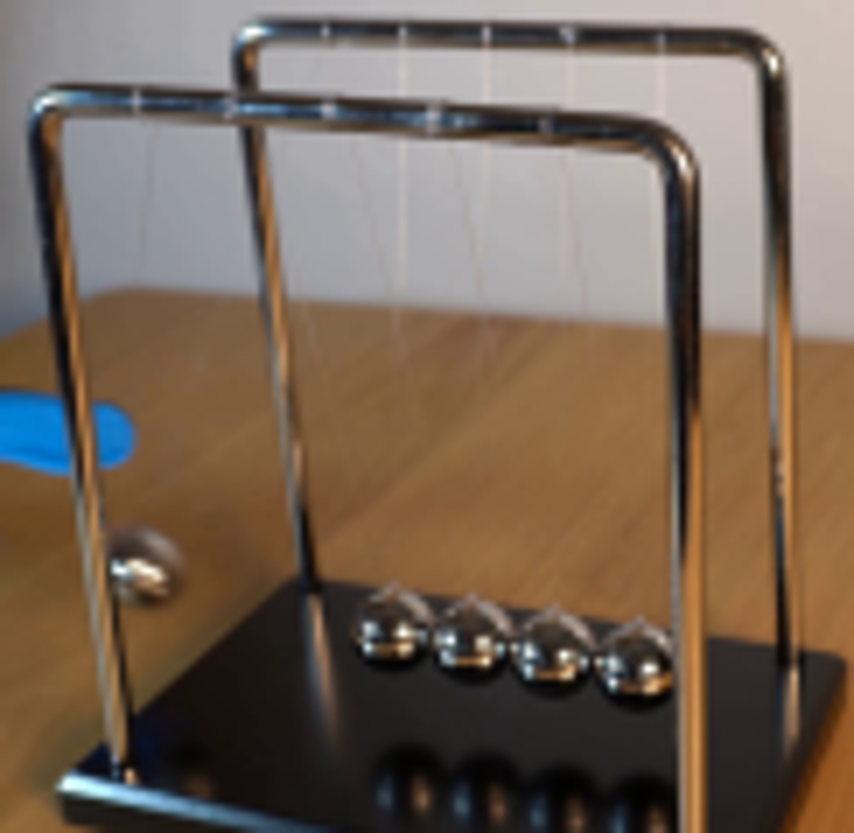
视觉工具实际返回图片 3
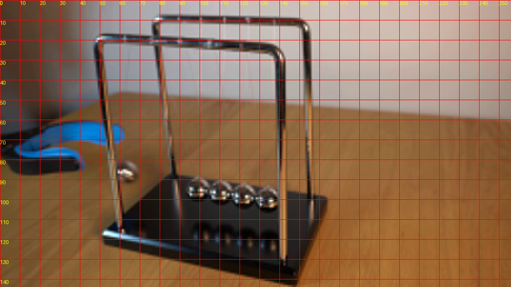
视觉工具实际返回图片 4
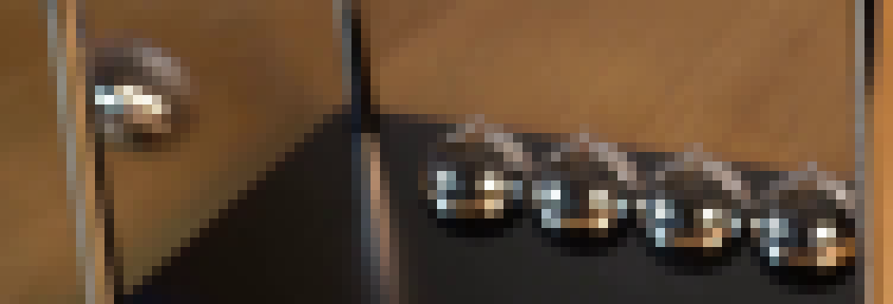
视觉工具实际返回图片 5
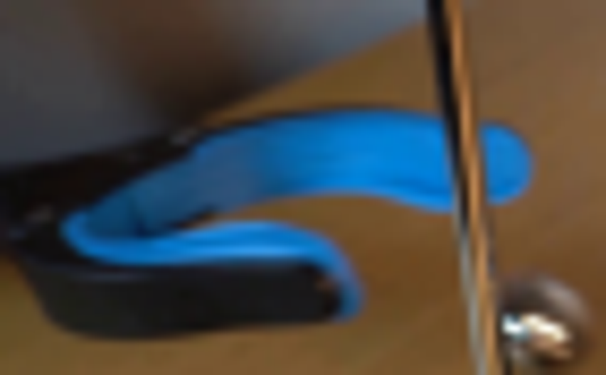
视觉工具实际返回图片 6
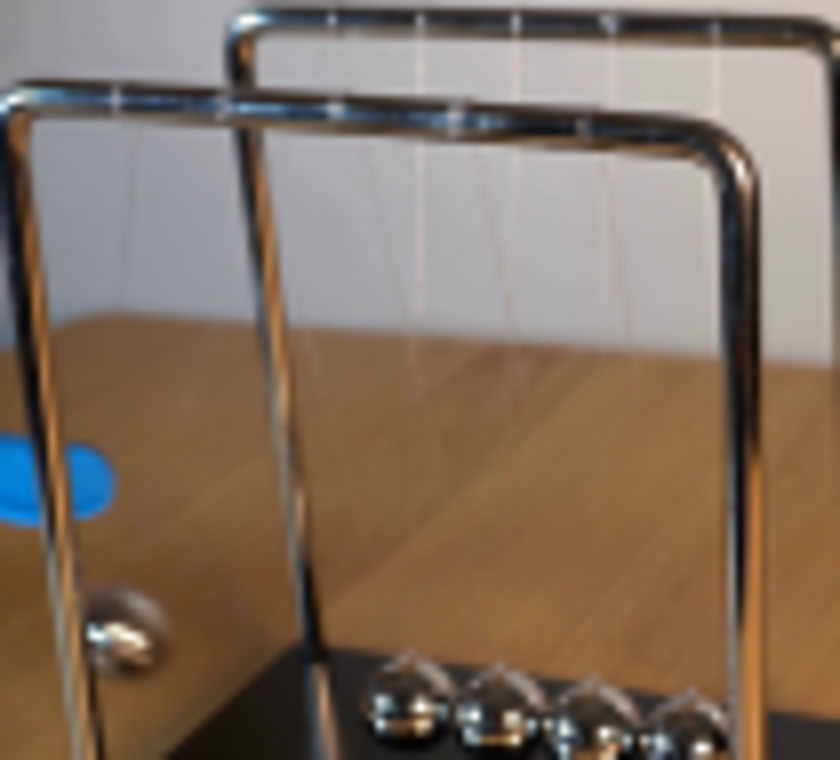
视觉工具实际返回图片 7
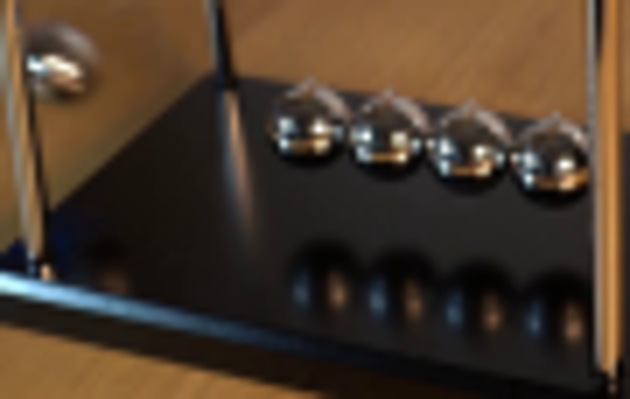
视觉工具实际返回图片 8
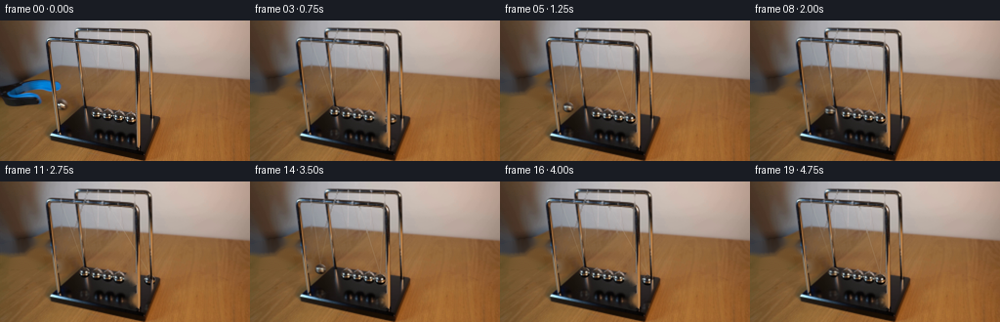
视觉工具实际返回图片 9
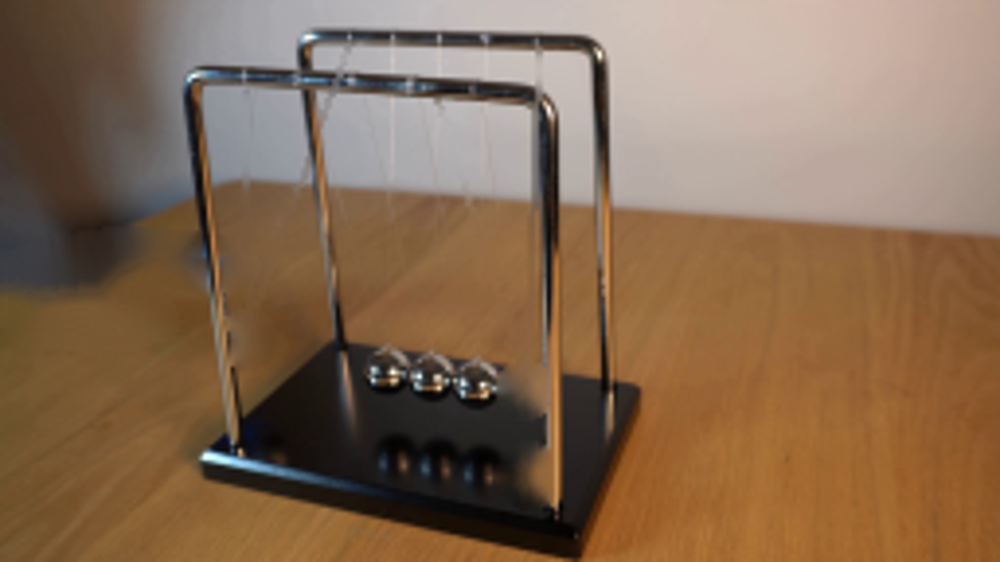
视觉工具实际返回图片 10
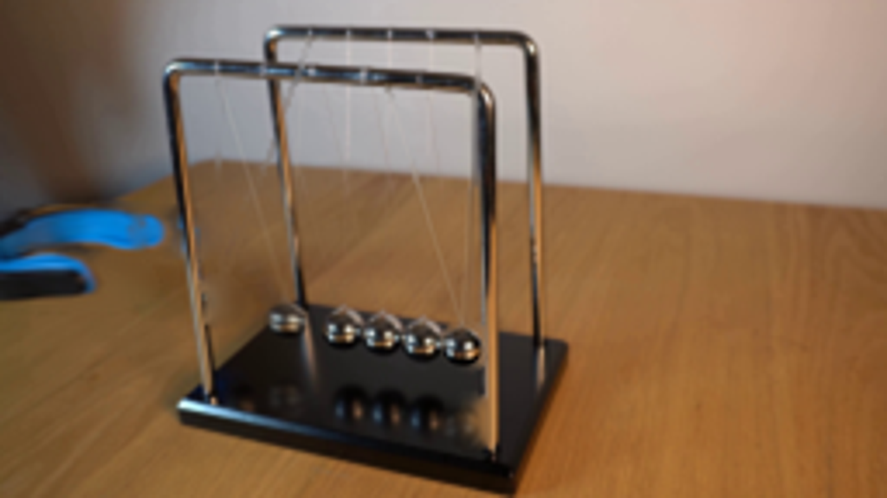
视觉工具实际返回图片 11
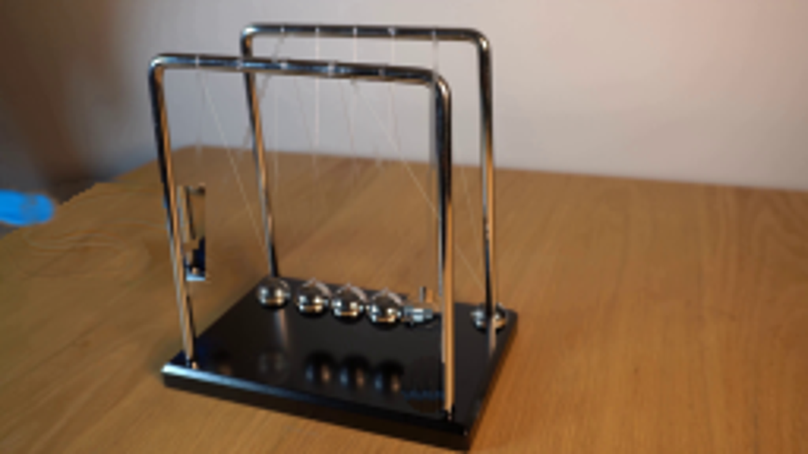
视觉工具实际返回图片 12
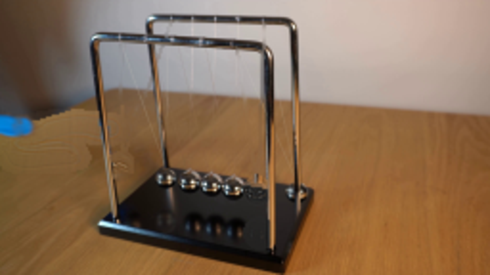
视觉工具实际返回图片 13
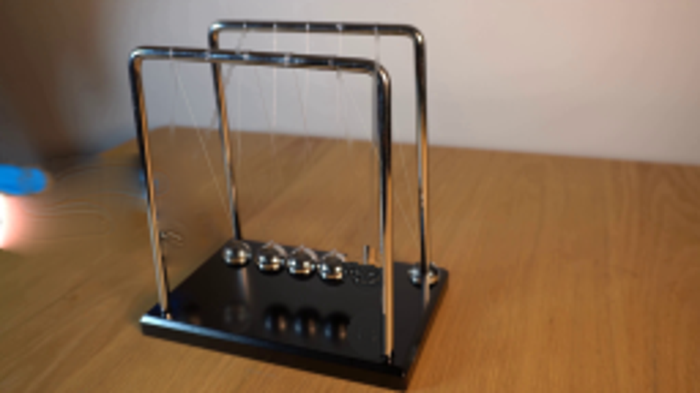
视觉工具实际返回图片 14
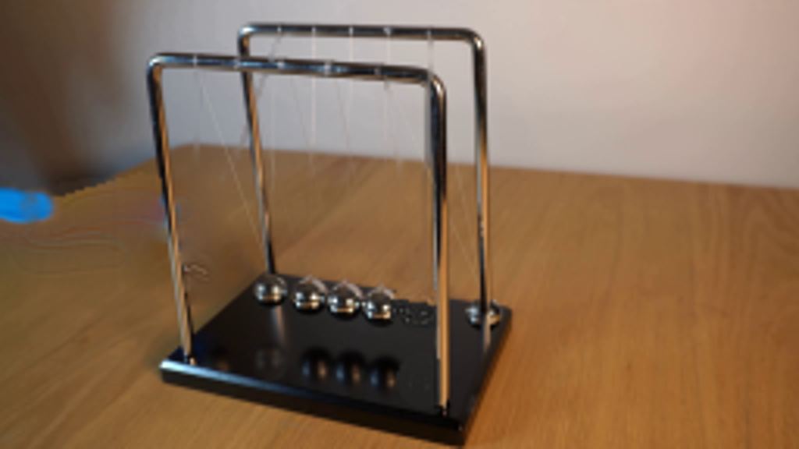
视觉工具实际返回图片 15
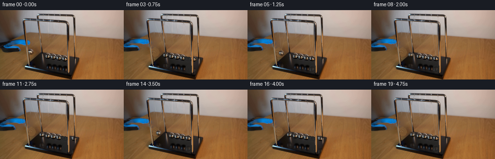
保存候选 11 份；完成命令 22 次；可验证图片返回 15 张。原始 API 响应与完整日志保留在本地。